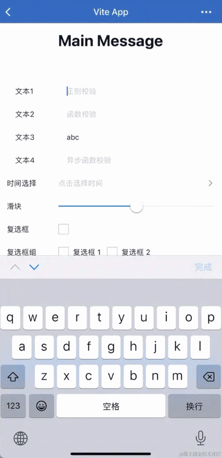
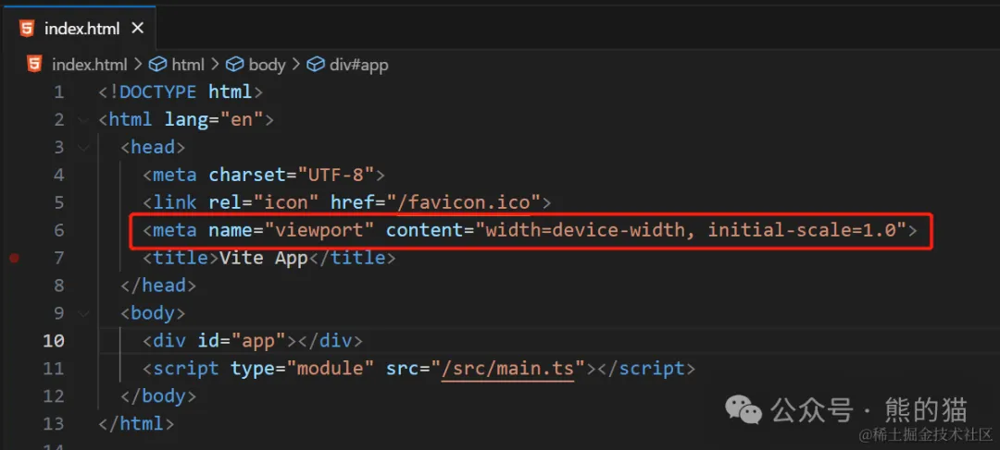

写 H5 页面真的要了解 meta 标签
2024/05/19 · YinHao前言
事情的起因是这样的，由于 小 A 需要负责开发一个 H5 移动端的项目，需要分别在 微信环境和企微环境中去使用，于是小 A 使用 Vite + Vue3 来进行开发，然后测试提出如下问题。
软键盘弹出，视图放大
IOS 系统 中在 微信环境 和 企微环境 中表现一致，具体如下：

软键盘弹出，视图发生偏移
- IOS、Android 系统 — 微信环境（正常）

- IOS 系统 — 企微环境（异常）
注意观察，底部 Tab 和手机底部小黑条的相对位置发生变化，即页面发生了偏移，导致原本设置的全屏 loading 也出现无法覆盖页面的情况，具体如下：

出现上述问题后，小 A 就开始一顿排查和尝试修改，但最终一下午过去还是没能解决，他说之前写的 H5 移动端项目也没出问题呀，后来询问得知之前的项目是别人搭好了后他再负责具体实现的！
实际上这些问题都可以通过设置 <meta> 标签属性值来解决，但由于他对 <meta> 不是很熟悉，所以根本没有往 <meta> 这方面考虑，导致花费了大量的时间。
使用 <meta name="viewport"> 解决问题
解决视图放大问题
点击输入框，视图为什么会放大？
原因是在 iOS 设备中的浏览器（微信内置浏览器、手机浏览器）当用户点击输入框并聚焦后，会自动放大页面以适应输入框的大小，本意是为了提高用户体验，确保输入框在焦点状态下可以完整地显示在屏幕上。
值得注意的是，这个自动放大的行为是 IOS 设备上的表现，也就是说在 Android 设备上当输入框聚焦时是不会被自动放大的。
但这种自动放大的行为在使用响应式设计和弹性布局的 Web 应用中可能会导致页面布局错乱，因为页面元素的尺寸和位置可能发生改变，导致视图表现异常。
调整 <meta name="viewport" />
实际上可以直接查看项目中对应的 index.html 文件，不难发现其中只有简单的 <meta> 内容：

很明显默认和视口参数相关内容为：
- 默认视图宽度 为 设备宽度
- 默认缩放比为 1
此时，只需要将 <meta name="viewport" /> 设置为如下方式即可解决问题，而这也是大多数项目（PC 端、移动端）需要设置的内容：
- 默认视图宽度 为 设备宽度
- 默认缩放比为 1
- 最大、最小缩放比为 1
- 不允许用户手动缩放
<meta
name="viewport"
content="width=device-width,initial-scale=1.0,minimum-scale=1,maximum-scale=1,user-scalable=no"
/>
解决视图上移问题
正如前面所示，视图发生偏移只在 IOS 系统中的企微环境出现，这就表明了微信 webview 渲染和企微 webview 渲染还是存在差异。
viewport-fit — iOS11 新增特性
viewport-fit 是为了适配 iPhoneX 对现有 <meta name="viewport" /> 标签的一个扩展，用于设置网页在可视窗口的布局方式，具有三个属性值：
- auto: 默认值，跟 contain 表现一致
- contain: 可视窗口完全包含网页内容
- cover: 网页内容完全覆盖可视窗口
既然看起来企微 webview 中视图高度没法覆盖，那我们就可以通过 <meta name="viewport" /> 设置网页在可视区域的布局方式将视图内容，新增 viweport-fit: cover 使得页面内容完全覆盖整个窗口，即可解决问题：
<meta
name="viewport"
content="width=device-width,initial-scale=1.0,minimum-scale=1,maximum-scale=1,user-scalable=no,viewport-fit=cover"
/>
meta 标签的属性
常见属性
name
name 和 content 属性一起配合使用，以键值对的方式给文档提供元数据，其中 name 作为元数据的键，content 作为元数据的值。
-
name="author"
- 用来表示网页的作者的名字，例如某个组织或者机构，例如
<meta name="author" content="aaa@mail.abc.com">
- 用来表示网页的作者的名字，例如某个组织或者机构，例如
-
name="description"
- 一段简短而精确的、对页面内容的描述
-
name="keywords"
- 与页面内容相关的关键词，使用逗号分隔，便于某些搜索引擎在遇到这些关键字时对文档进行分类
-
name="viewport"
- 来控制视口的大小和形状
-
name="robots"
-
all：搜索引擎将索引此网页，并继续通过此网页的链接索引文件将被检索
-
none：搜索引擎将忽略此网页
-
index：搜索引擎索引此网页
-
follow：搜索引擎继续通过此网页的链接索引搜索其它的网页
-
表示爬虫对此页面的处理行为或应当遵守的规则，是用来做搜索引擎抓取的
-
可设置
<meta name="robots" content="all | none | index | follow"> -
示例：
<meta name="robots" content="index, follow">
-
-
name="renderer"
-
用来指定支持双核浏览器要采用哪种的渲染方式，如 360 浏览器
-
<meta name="renderer" content="webkit">默认 webkit 内核 -
<meta name="renderer" content="ie-comp">默认 IE 兼容模式 -
<meta name="renderer" content="ie-stand">默认 IE 标准模式
-
http-equiv
通过该属性可以设置特定 HTTP 标头内容，例如（非全部）：
-
http-equiv="X-UA-Compatible"- 一般用来是做 IE 浏览器适配的，如以下告诉 IE 浏览器使用最高版本来渲染页面
<meta http-equiv="X-UA-Compatible" content="IE=edge, chrome=1">
-
http-equiv="Content-Type"- 用于声明 MIME 类型和文档的字符编码
<meta http-equiv="Content-Type" content="text/html;charset=utf-8">
-
http-equiv="x-dns-prefetch-control"- HTML 页面中的
<a>标签会自动启用 DNS 提前解析来提升网站性能，但是在使用 https 协议的网站中失效，可通过设置以下方式进行打开 <meta http-equiv="x-dns-prefetch-control" content="on">
- HTML 页面中的
content
此属性包含 http-equiv 或 name 属性的值，具体取决于所使用的值。
charset
用于声明了文档的字符编码，值得注意的是：
-
若使用这个属性，那么它的值只能是字符串 "utf-8" （不区分 ASCII 大小写），因为 UTF-8 是 HTML5 文档的唯一有效编码
-
声明字符编码的
<meta>元素必须完全位于文档的前 1024 个字节内
meta 扩展
清除缓存
在单页面应用 (Single Page Application, SPA) 中，对应的 html 文件是不需要被缓存的，只需要对 html 文件中的 CSS、JavaScript 等资源进行缓存（得益于现代构建工具的特性，可以直接使用强缓存），那么此时我们就可以通过设置 <meta http-equiv> 来实现 html 文件清除缓存功能，如下：
<meta http-equiv="Expires" content="0" />
<meta http-equiv="Pragma" content="no-cache" />
<meta http-equiv="Cache-control" content="no-cache" />
<meta http-equiv="Cache" content="no-cache" />
这样的方式有利于在发布新版本后，避免通过手动清除浏览器缓存，如果不清除缓存就会加载旧版本的资源。
禁止翻译
通常项目中可能会存在国际化的需求，这就意味着用户可以手动选择当前的语言环境，但除此之外，通过浏览器本身也会存在对应的翻译插件。
问题点在于，如果用户先使用浏览器翻译插件默认翻译文档内容，又切换了项目中的国际化功能，那么此时就导致文档中的内容出现翻译不准确。
而这个问题是亲身经历过的，只记得当时用户在 Chrome 浏览器中反馈翻译不准确甚至出现意料之外字符的问题时，也是花费了一番功夫才确定是用户使用浏览器翻译插件的问题，针对 Chrome 浏览器在访问我们自己的项目时可以让其不进行自动翻译，可进行如下设置：
<meta name="google" content="notranslate" />
自定义元数据
除了使用 <meta> 标签本身提供特定元数据内容之外，我们其实也可以自定义元数据，只不过这个元数据不会被当前文档所识别并被应用，例如：
<meta data-n-head="ssr" name="theme-color" content="#ffffff" />
<meta data-n-head="ssr" name="msapplication-TileColor" content="#da532c" />